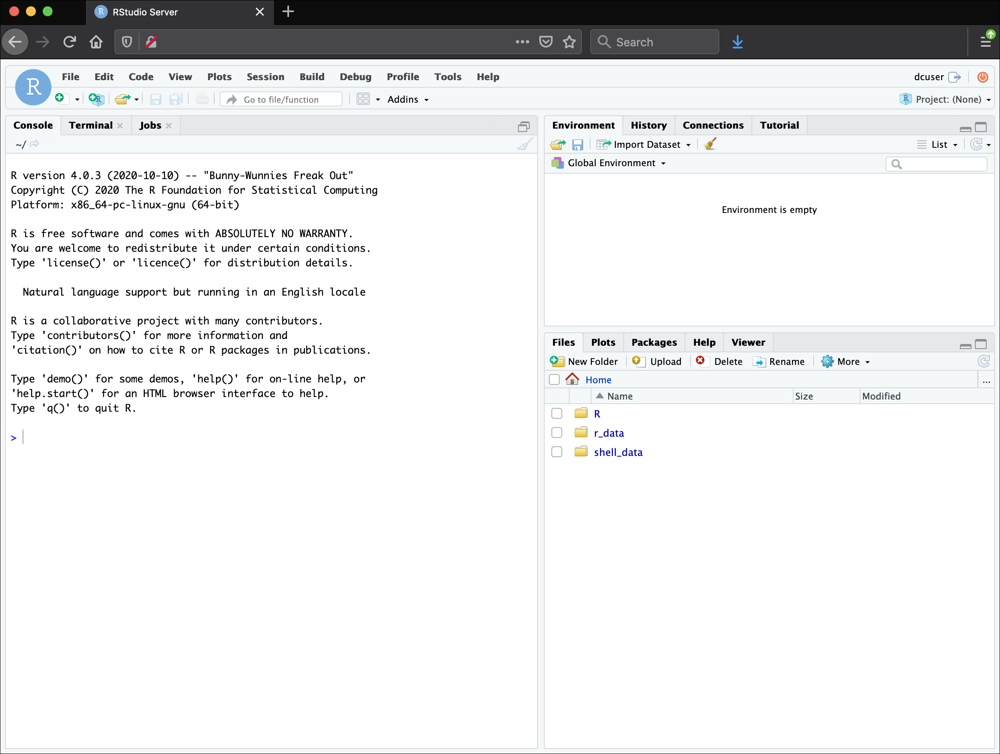
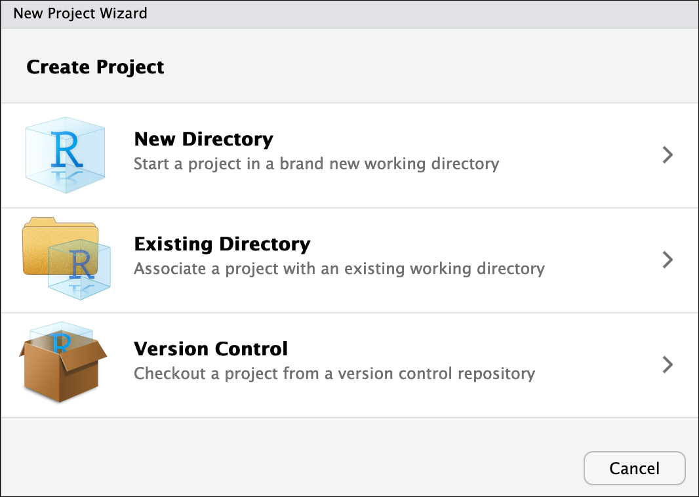

getwd()Introducing R and RStudio
A Brief History of R
R has been around since 1995, and was created by Ross Ihaka and Robert Gentleman at the University of Auckland, New Zealand. R is based off the S programming language developed at Bell Labs and was developed to teach introductory statistics. See this slide deckby Ross Ihaka for more info on the subject.
Advantages of using R
At more than 30 years old, R is fairly mature and growing in popularity. However, programming isn’t a popularity contest. Here are key advantages of analysing data in R:
R is open source. This means R is free - an advantage that means anyone, anywhere can access it. It also means that R is actively developed by a community (see r-project.org), and there are regular updates.
R is widely used. Ok, maybe programming is a popularity contest. Because, R is used in many areas (not just bioinformatics), you are more likely to find help online when you need it. Chances are,almost any error message you run into, someone else has already experienced.
R is powerful. R runs on multiple platforms (Windows/MacOS/Linux). It can work with much larger datasets than popular spreadsheet programs like Microsoft Excel, and because of its scripting capabilities is far more reproducible. Also, there are thousands of available software packages for science, including genomics and other areas of life science.
Introducing RStudio Server
In these lessons, we will be making use of a software called RStudio, an Integrated Development Environment (IDE). RStudio, like most IDEs, provides a graphical interface to R, making it more user-friendly, and providing dozens of useful features. We will introduce additional benefits of using RStudio as you cover the lessons. In this case, we are specifically using RStudio Server, a version of RStudio that can be accessed in your web browser. RStudio Server has the same features of the Desktop version of RStudio you could download as standalone software.

Overview and customisation of the RStudio layout
Here are the major windows (or panes) of the RStudio environment:

Source: This pane is where you will write/view R scripts. Some outputs (such as if you view a dataset using
View()) will appear as a tab here.Console/Terminal/Jobs: This is actually where you see the execution of commands. This is the same display you would see if you were using R at the command line without RStudio. You can work interactively (i.e. enter R commands here), but for the most part we will run a script (or lines in a script) in the source pane and watch their execution and output here. The “Terminal” tab give you access to the BASH terminal (the Linux operating system, unrelated to R). RStudio also allows you to run jobs (analyses) in the background. This is useful if some analysis will take a while to run. You can see the status of those jobs in the background.
Environment/History: Here, RStudio will show you what datasets and objects (variables) you have created and which are defined in memory. You can also see some properties of objects/datasets such as their type and dimensions. The “History” tab contains a history of the R commands you’ve executed R.
Files/Plots/Packages/Help/Viewer: This multi-purpose pane will show you the contents of directories on your computer. You can also use the “Files” tab to navigate and set the working directory. The “Plots” tab will show the output of any plots generated. In “Packages” you will see what packages are actively loaded, or you can attach installed packages. “Help” will display help files for R functions and packages. “Viewer” will allow you to view local web content (e.g. HTML outputs).
All of the panes in RStudio have configuration options. For example, you can minimise/maximise a pane, or by moving your mouse in the space between panes you can resize as needed. The most important customisation options for pane layout are in the View menu. Other options such as font sizes, colors/themes, and more are in the Tools menu under Global Options.
Note: RStudio runs R, but R is not RStudio.
Extra for experts - RStudio Projects
Create an RStudio project
One of the benefits you can take advantage of in RStudio is something called an RStudio Project. An RStudio project allows you to more easily:
- Save data, files, variables, packages, etc. related to a specific analysis project
- Restart work where you left off
- Collaborate, especially if you are using version control such as git
- To create a project, go to the File menu, and click New Project

In the window that opens select either Existing Directory, if you already have a folder you want to use, or select New Directory if you want to make a new folder now and associate it with an R project. If you select Existing Directory, then select Browse… and then choose and click your folder on your computer.
Finally click Create Project. In the “Files” tab of your output pane (more about the RStudio layout above), you should see an RStudio project file,
name-of-folder.Rproj. All RStudio projects end with the.Rprojfile extension.
Handy tip! Name your folders on your computer without spaces – use hyphens or underscores instead. Many programming languages do not like spaces in the names of files or folders, so you will save yourself a lot of headaches by avoiding spaces from the start.
Creating your first R script
Now that we are ready to start exploring R, we will want to keep a record of the commands we are using. To do this we can create an R script:
- Click the File menu and select New File and then R Script.
- Before we go any further, save your script by clicking the save/disk icon that is in the bar above the first line in the script editor, or click the File menu and select Save.
- In the Save File window that opens, name your file
bioinformatics-day. The new scriptbioinformatics-day.Rshould appear under Files in the output pane. By convention, R scripts end with the file extension.R.
You can open
.Rfiles in any text editor program, like Notepad.
Using functions in R, without needing to master them
A function in R (or any computing language) is a short program that takes some input and returns some output. Functions may seem like an advanced topic (and they are), but you have already used at least one function in R. getwd() is a function! The next sections will help you understand what is happening in any R script.
You have hopefully noticed a pattern: an R function has three key properties:
- Functions have a name (e.g.
dir,getwd); note that functions are case sensitive! - Following the name, functions have a pair of
() - Inside the parentheses, a function may take 0 or more arguments
An argument may be a specific input for your function and/or may modify the function’s behavior. For example the function round() will round a number with a decimal:
# This will round a number to the nearest integer
round(3.14159)[1] 3Getting help with function arguments
What if you wanted to round to one significant digit? round() can do this, but you may first need to read the help to find out how. To see the help (in R sometimes also called a “vignette”) enter a ? in front of the function name:
?round()The “Help” tab will show you information (often, too much information). You will slowly learn how to read and make sense of help files. Checking the “Usage” or “Examples” headings is often a good place to look first. If you look under “Arguments,” we also see what arguments we can pass to this function to modify its behavior.
round() takes two arguments, x, which is the number to be rounded, and a digits argument. The = sign indicates that a default (in this case 0) is already set. Since x is not set, round() requires we provide it, in contrast to digits where R will use the default value 0 unless you explicitly provide a different value. We can explicitly set the digits argument when we call the function:
round(3.14159, digits = 2)[1] 3.14Libraries, packages, functions
Functions, like the two we have just used getwd() and round(), come from packages, which you can download to your computer then load into R as a library. Some packages are automatically installed as part of base R when you download R and Rstudio – the two functions above are examples that come from {base}. As we go along today we will discuss more on where to look for the libraries and packages that contain functions you want to use. For now, be aware that two important ones are:
- CRAN, the main repository for R
- Bioconductor, a popular repository for bioinformatics-related R packages.
These repositories store many packages that have been developed by the R community and can be browsed and downloaded by anyone.
RStudio contextual help
Here is one last bonus we will mention about RStudio. It’s difficult to remember all of the arguments and definitions associated with a given function. When you start typing the name of a function and hit the Tab key, RStudio will display functions and associated help:

You can see that the “linear model” function lm() comes from a package called {stats}, which like {base} also comes by default with R.
Once you type a function, hitting the Tab inside the parentheses will show you the function’s arguments and provide additional help for each of these arguments.

Important R things to know
We don’t have time to learn everything there is to know about R – in fact, people who have been using R for 20+ years still learn new things all the time! But, there a couple of key things about how R works that you should know now before we move on to the next section. We’ll be learning more R things a long the way as we learn gene expression.
Objects and assignment
To work with data in R we need to make objects, which we assign a value.
To create an object, you need:
- A name (e.g.
a) - A value (e.g.
1) - The assignment operator (
<-)
In your script, use the R assignment operator <- to assign 1 to the object a as shown. Remember to leave a comment in the line above (using the #) to explain what you are doing:
# This line creates the object 'a' and assigns it the value '1'
a <- 1Next, run this line of code in your script. You can run a line of code by hitting the Run button that is above the first line of your script in the header of the ‘Source’ pane or you can use the appropriate shortcut:
- Windows execution shortcut: Ctrl + Enter
- Mac execution shortcut: Cmd(⌘) + Enter
To run multiple lines of code, highlight all the line you wish to run and then hit Run or use the shortcut key combo listed above. In the RStudio ‘Console’, you should see:
a <- 1
>The ‘Console’ will display lines of code run from a script and any outputs orstatus/warning/error messages (usually in red). The > indicates R is waiting for an instruction again from you. Often when your code works, there will be no obvious output. If it didn’t you will usually get an error message.
In the ‘Environment’ window you will also get a table:
| Values | |
|---|---|
| a | 1 |
The ‘Environment’ window allows you to keep track of the objects you have created in R.
Mathematical operations
R was originally designed for statistics and as such is a very powerful calculator. Most of the usual mathematical operators work as you may expect. Let’s try a few.
Pure math works in R with literal numbers, for example:
(1 + (5 ** 0.5)) / 2[1] 1.618034The ** operator is a way to write “to the power of”. Other operators such as subtract - and multiply * all work too.
Next, let’s do some maths with objects. Much like algebra, objects can be part of mathematical equations. Create an object that has the value of number of pairs of human chromosomes as follows:
hum_chr_num <- 23Now, see what happens if you want to find the number of chromosomes in a diploid human cell. You can times the object by 2 to get the result:
hum_chr_num * 2[1] 46Note that this output 46 is not stored anywhere, and the object hum_chr_num is not changed in any way. The only way to save or change an object is to assign a new value to it.
If we wanted to store the 46 value somewhere, we can create a new object, with our new value:
hum_diploid_chr_num <- hum_chr_num * 2Lastly, we can even do math with multiple objects, such as follows:
hum_diploid_chr_num / hum_chr_num[1] 2